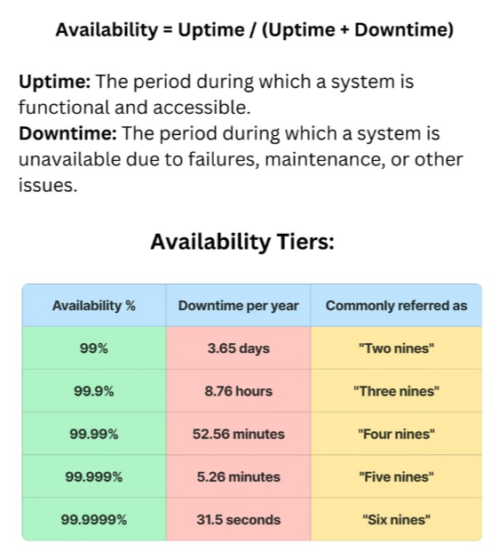

System Design Mastery
Master scalable systems with premium insights
📈 Availability, Reliability & Maintainability
1️⃣ Availability
🔹 What is Availability?
Availability = System is available most
of the time.
It focuses on minimizing downtime.
📊 Measured as:
Percentage of time system is working
Example:
99.9% availability ≈ ~8 hours downtime/year
If Elevator breaks → backup elevator starts after 10 seconds.
💡 Key Points
- App is accessible when user opens it
- Even slow system can be available
- Downtime = availability problem
One line:
Availability means System may briefly pause when failure happens, but recovers quickly by shifting to another component.

📊 Availability Diagram
2️⃣ Reliability
🔹 What is Reliability?
Reliability = system works correctly every time
📊 Key Aspect:
No wrong results, no lost data
Example:
✅ Payment deducted once → reliable
❌ Payment deducted twice → not reliable
💡 Key Points
- System can be available but not reliable
- Data correctness matters
- Consistency is important
One line:
Reliability means correct behavior over time.
3️⃣ Maintainability
🔹 What is Maintainability?
Maintainability = easy to fix and update system
📊 How easy it is to:
- Fix bugs
- Add new features
- Upgrade components
💡 Key Points
- Modular code → easy maintain
- Tight coupling → hard maintain
- Bad maintainability = slow development
- Impacts long-term success
One line:
Maintainability means easy to change and fix.
4️⃣ Availability vs Reliability vs Maintainability
❌ Available ❌ Reliable → Down System
System is offline. Users can't access it. Worst scenario.
✅ Available ❌ Reliable → Buggy System
System works but gives wrong results. App is up but shows bugs, errors, or incorrect data.
❌ Available ✅ Reliable → Offline but Correct
System is down but would work correctly when it's back. Correct but offline.
✅ Available ✅ Reliable → Perfect System ⭐
System is up AND works correctly every time. This is the goal!
5️⃣ Quick Reference Table
| Term | Means | Example |
|---|---|---|
| Latency | Time for one request | 50ms response time |
| Throughput | Requests handled per second | 1000 req/sec |
| Availability | System is up | 99.9% uptime |
| Reliability | System works correctly | No data loss |
| Maintainability | Easy to modify | Clean code, easy updates |
🎯 Summary
A great system design needs all three: it must be available (up and running), reliable (works correctly), and maintainable (easy to update and fix). Focus on all three to build systems that users love and teams can maintain.
💡 Pro Tip
In interviews, remember: availability is about operations (DevOps, monitoring), reliability is about correctness (testing, architecture), and maintainability is about code quality (design patterns, documentation). Each requires different strategies!